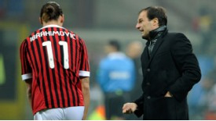

AC Milan striker Zlatan Ibrahimovic is targeting a career in coaching after he hangs up his boots, but believes he will "continue playing for two to three more years" before retiring.

Ibrahimovic, 30, has had a glittering playing career - with last season's Serie A title victory with AC Milan his eighth successive domestic championship triumph. However, the former Barcelona and Inter Milan star's attitude has often been questioned and few would pick him out as potential coaching material. That does not appear to have deterred Ibrahimovic, though, and he says former international team-mate Henrik Larsson's tilt at coaching Landskrona BoIS in Sweden has inspired him to follow the same path.
"I have previously said that a coaching career wouldn't be for me, but at the moment it's very likely to happen after my career," Ibrahimovic told Sportbladet. "I remember that Henrik Larsson also said that he didn't want to become a coach, and look at him now. You never know what happens in football. "I want to continue playing for two to three more years and then we will see what happens in the future."